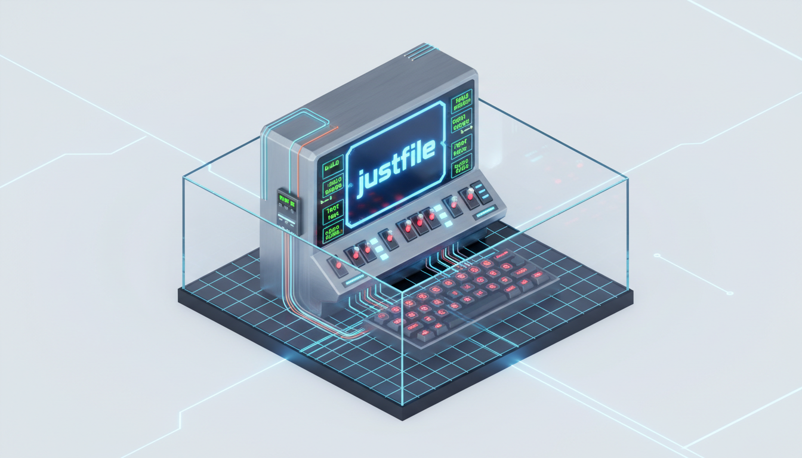
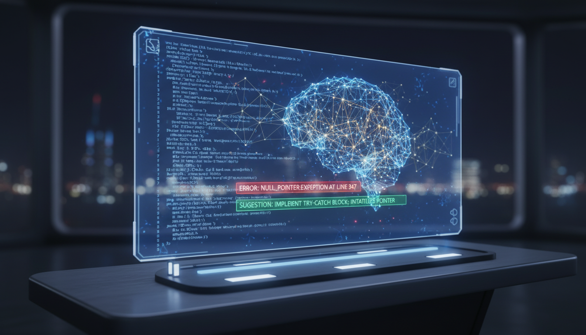
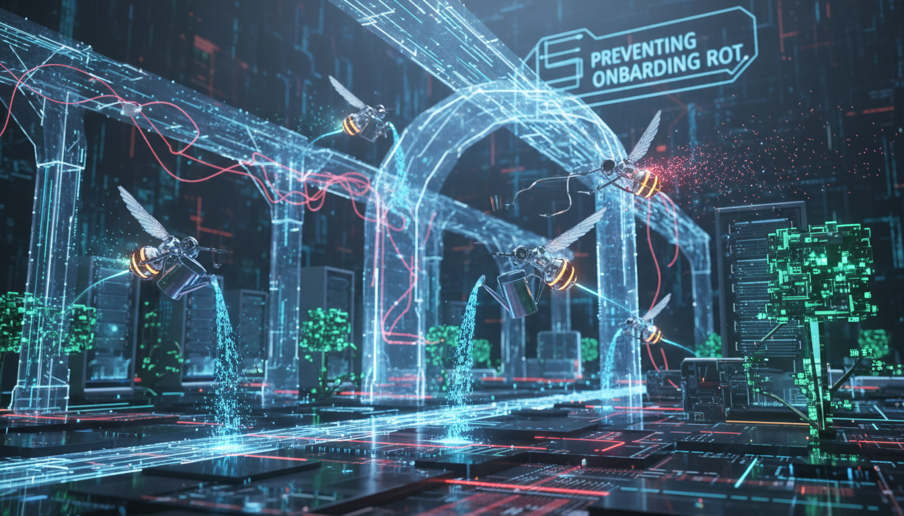

THE AGENTIC
ONBOARDING
REVOLUTION
META DESCRIPTION
Achieve a five-minute local setup using deterministic scripts and agentic AI. Learn how to eliminate onboarding rot and scale engineering teams with Just and Cloud Code.
Scaling Codebases with Just, Hooks, and AI Agents
In fifteen years of engineering across more than fifty different codebases, I have discovered a single, infallible metric for judging the maturity of an engineering team: the time it takes for a new hire to run the project locally. For elite teams, this is a five-minute affair—one link, a few config updates, and a handful of commands. For the rest, it is a multi-day gauntlet of pair programming, frantic Slack messages, and rummaging through outdated README files.
As codebases grow in size and value, the complexity of maintaining these environments often outpaces the team’s ability to document them. However, we are entering a new era of engineering. By combining deterministic command runners, specialized lifecycle hooks, and agentic intelligence, we can move beyond static documentation. This approach doesn't just automate the setup; it creates a self-healing, interactive onboarding experience.

The Launchpad: Standardizing Workflows with Justfiles
The first step in modernizing your codebase is to eliminate the "flag fatigue" that plagues complex projects. Developers often have to memorize dozens of CLI flags for different environments. To solve this, I use a justfile. This is a minimalist command runner that serves as the standardized launchpad for all engineering work.
# Example justfile
setup-init:
@echo "Initializing environment..."
./scripts/setup_init.sh
maintenance:
@echo "Running maintenance..."
./scripts/maintenance.sh
cli prompt="":
cloud-code --init --prompt "{{prompt}}"With a justfile, you no longer need to remember if it was --db-reset or --reset-db. You simply type just to see a menu of available commands. This standardization is crucial for agents. When an agent enters your codebase, it shouldn't have to guess how to run your tests or install dependencies.

Deterministic Foundations: Cloud Code Setup Hooks
Cloud Code, an IDE-integrated development environment, recently released a powerful "setup hook" designed specifically for initialization and maintenance. Unlike standard lifecycle hooks that run with every session, the setup hook is triggered by specific flags, such as --init or --maintenance.
{
"hooks": {
"setup": {
"init": "just setup-init",
"maintenance": "just maintenance"
}
}
}The Agentic Layer
The real magic happens when you layer agentic prompts over these deterministic scripts. A script can install a package, but an agent can explain why it failed and how to fix it.
Example Agentic Wrapper Prompt:
Context: You are monitoring the execution of 'just setup-init'.
Action:
1. Stream logs from the process.
2. If an exit code > 0 occurs, analyze the last 20 lines of stderr.
3. Cross-reference the error with docs/troubleshooting.md.
4. Propose a fix and ask the user for permission to execute.

Human-in-the-Loop & Proactive Maintenance
Onboarding isn't always a "one-shot" process; it often requires decisions. Using a Human-in-the-Loop (HITL) prompt allows the agent to guide the engineer through choices like fresh database vs. production dump.
# install-hitl.md
Workflow:
1. Run /prime to understand codebase context.
2. If mode == "interactive":
- Ask: "Which database mode?"
- Ask: "Check environment variables?"
3. Execute based on user input.Codebases suffer from "onboarding rot". By using a maintenance agent triggered via the maintenance hook, you can automate health checks. If the agent finds an issue, it doesn't just alert the team; it can proactively generate a PR to fix the documentation.
Conclusion
"The future of engineering management is agentic. We are moving away from the era of static READMEs and toward a world where the codebase itself is intelligent enough to assist in its own deployment. Stop asking your engineers to read documentation—start building agents that execute it."